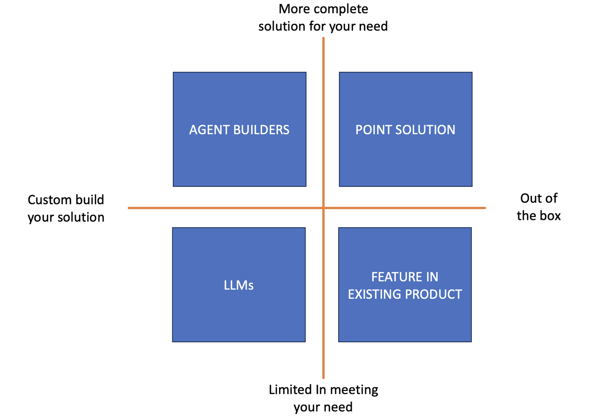

The one function that I have struggled to find meaningful use cases for GenAI has been CS. I spent years in CS and know this function very well and so this was one I gravitated towards and want to find something useful to CSMs (that are super busy and could benefit from a reduction in manual work).
There are some obvious GenAI use cases like Account Research or Individual Research. Definitely very relevant to CSMs but also to AEs etc. and since I covered those under Account Planning, I wanted to find something different.
Recently I was working with a CS Leader and they had a need that was perfect for GenAI. They had a kick off meeting with the customer stakeholders and to be prepared for the meeting wanted a handoff document. We all know how hard it is to get sales to fill out a handoff document and even if they do, it rarely contains all the information we need.
A lot of you are familiar with my GenAI product options matrix (see below)

and this is a perfect use case to evaluate different options. But before we start thinking about which option to choose, there is a key pre-requisite. To meet this need, we need data and the data is in the form of customer calls and emails. All the calls and emails that happened during the sales cycle. This is the raw data that is key to generating really valuable handoff documents.
I will keep repeating this till I am blue in the face, if organizations are not recording their customer calls, they are losing a goldmine of data that can be repurposed for so many use cases. Now that we have got that out of the way, let us get back to our options.
Option 1 - LLMs - Use ChatGPT etc. The challenge with this is threefold, security, cost and amount of data. If you tried to upload all the calls and emails to ChatGPT it will be larger than the context window and even if it did fit in the context window, ChatGPT gets lazy with very large content and for every question you would have to pass all the information and that would get very expensive. Also, from a security standpoint, I am not sure you want to put all your calls into ChatGPT. You could use the team or enterprise version to get around security but the other challenges remain.
Option 2 - Feature in Existing product - Use Gong's Ask Me Anything - Gong has a really nifty feature which is Ask Me Anything on deals. Basically, Gong has curated all calls and emails related to a particular deal. The AMA feature then lets you ask any questions against that curated set of calls and emails. So I asked it these questions -
What did the customer purchase
Key Stakeholders at Customer
Key Stakeholders Critical for Post-Sale Journey
Is this a competitive replacement
Outcomes
Expectations from Customer Solutions
Implementation Timeline
Key Use Cases
Expectations from Training and Enablement
Any Challenges the customer foresees in rolling out the product
Key Business Priorities and Challenges
Specific Challenges or Pain Points
It took some time and prompting to get Gong to give the results I wanted but I was able to generate this handoff record in a couple hours and it helped the executive get up to speed immediately.
Option 3 - Point Solution - Use Tribyl - Tribyl is a purpose built GenAI first product that has already ingested all Gong (or Clari or Chorus) calls and organized and sorted all the calls, emails and CRM data. So one could just ask Tribyl to generate a handoff record and it would output that quickly. This is out of the box and the fastest time to value.
Option 4 - Agent Builder - Use AnyQuest - This would be the most flexible option but would take some initial set up. First I would have to identify all the calls and emails specific to the deal. Then I would need to upload them to AnyQuest. Once this upfront work was done, then I could ask not just the above questions but ask all kinds of other questions and built a repeatable agent that can give me exactly what I want at scale. Plus you can use AnyQuest for various other use cases.
Bottomline, there are pros and cons to each approach. To wrap up, here is the call to action -
Start recording all your customer interactions (without this, we are dead on arrival).
Pick one of the above solutions (ideally not the LLM option as you will struggle with that) and get going. You can save you CS and PS teams a lot of time.
If anyone wants help doing this, reach out to me.